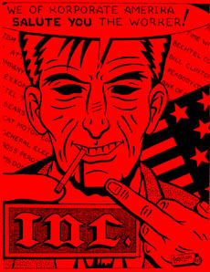

Truckin' Into Reality
By Arthur J Miller
I got them old Boomtown, Nevada blues; just sittin' at the last out before the Truckee inspection station, hoping to make Modesto by morning. Overloaded and my axle extended out too long for California bridge laws. If I'm weighed the heat will nail me for near a grand in fines.
 It ain't my fault, though. Dispatch had me swap trailers in Wyoming, which I weighed in Nevada. "Sit in Boomtown" dispatch tells me, while they figure something out; then after six hours I'm told to run the scales.
Yea, right, it ain't them that will get nailed, nor will they have to pay the fine, driver responsibility is the name of the game.
So I am forced to run two-lane back roads across the Sierras hauling 84,500 pounds (4,500 pounds over weight). The roads there are not suitable for 30' trailers, a sign states, and I'm pulling a 53 footer.
I run at night because my trailer can't make it around the 15mph curves without taking up both lanes, but at night I can see the headlights of cars coming and stop before the curve. Up the mountain crawling in 4th gear, though the valleys and passes with great care. Weary as hell after three and a half weeks on the road, driving through rain, snow, ice and dust storms. Driving 10 hours on then 8 hours off then 10 hours on again; forced to run two logbooks so that the heat don't shut me down.
It's getting late and I hoping there ain't no ice on the road ahead. Then over the last pass and down the other side with grades of 6% to 8% with 15 mph curves, smoking my brakes before I hit flatlands again.
I think to myself that I must be the point to someone's truck driving song. But there ain't never been a song wrote, ain't never been a song sung that has expressed the true weariness, hardships, working conditions, and loneliness of a long haul truck driver. Though a poet I ain't, nor a wordsmith of praise, just a bone tired trucker with a story to tell, of truckin' into reality.
I have always worked in industries where the image of the job never meets its reality. I've been a fruit tramp picking berries, a zinc stripper in the hard rock mining industry, worked for the railroad, a roughneck on wildcat oil rigs, and a pipefitter in the shipyards. I was always amazed, working such jobs, how different the image of the job and the reality of the job was. After work ran out of the shipyards I became a long haul truck driver, and though I knew things would not be like most people think they are, I was really shocked when I found out the reality of long haul truck driving.
I write these words because I feel it is important for those who wish to change industry to understand it.
Most long haul truck drivers are nonunion, because no union has wanted to organize them. This means that the conditions we work under are set by the bosses and the government, and the first thing you learn is that the driver is responsible for everything and is always at fault if something goes wrong. If we are overweight, if our chassis is too long, if we don't have the right permits, if there is something wrong with the truck, if there is an accident, if a shipment is miss-labeled and it is hazardous materiel, if the count is wrong on the cargo and so on; it is the driver who is responsible, not the bosses. Even if the company makes you do something like run scales, if you get caught you take the fall.
When you start off at the terminal you do a pretrip inspection. You are told not to write up defects in your driver's vehicle inspection report in your log, because if the DOT (Department of Transportation) sees it they will inspect your truck. Also, if the driver has nothing in writing about a defect, then if you get into an accident or get a citation the company is in the clear because they did not know about it.
Often if you find something wrong with your truck you will be told to get it fixed when you get back; that may be weeks later. Out on the road if you find something wrong, again you will be told to have it fixed when you get back.
Just to give you an idea of how bad this can get on my last load out of Denver, my truck had an air leak in a brake line, an oil leak in a wheel drum, an exhaust leak, and two bad tires. I have even had to pull trailers with bad brake adjustments, and cracked brake pads.
I could write a book about truck defects, but the point is that many trucks out on the road are running defective and there is nothing the drivers can do about it. If we complain, refuse to driver or write these things up we catch hell from the boss. That would mean bad dispatches, or being made to sit waiting for loads. And since most drivers are paid by the mile a dispatcher can make sure that you make little money.
Every driver must keep a daily log of all his or her hours. We, by law, cannot driver longer than 10 hours without 8 hours off duty or in the sleeper berth. We can have another 5 hour on duty (not driving) for such things as loading and unloading, inspections and fueling. We can work endless hours on duty (not driving) but if it is over 15 hours we must have 8 hours off before driving again.
At the end of each day we must add up all our driving hours and on duty (not driving) hours together. We cannot have more than 70 hours in 8 days. How we get around this is to not count all our on duty (not driving) hours and by running two logbooks. This way you never run out of hours. Even if you just run one logbook you can drive 16 hours in a day. If you do run out of hours they will lay you over at a truck stop somewhere and may find another truck to pick up your load.
There are no 8-hour days or 40-hour week laws that cover truck drivers. There is no time-and-a-half for overtime. We are not even paid for inspections or other on duty (not driving) hours because we are paid by the mile.
In some cases the driver is even responsible for loading and unloading. Sometimes they let us use lumpers, but this the bosses don't like because they must pay lumpers more than they pay drivers. They have you sign a paper that if you are injured while loading or unloading that the company is not responsible, and if you don't sign it you don't get paid. You get your dispatch and it is your job to get the load to where it is going on time. Some times you may have a load that has an appointment in three days, but it only takes you one day to drive it there thus you must sit for two days. Since the boss ain't paying you to sit and you are not using up hours this works out real nice for the boss.
Then there are the loads that are going to be late no matter how hard you drive. What usually has happened here is that the company gets a load, but it does not have a truck ready for it. So the load sits there until some truck can get it. But if the driver gets it there late, the driver is to blame, it goes on to the record as a late load and the company is not at fault. If you get too many late loads you lose your job; which is one reason for running two log books.
My last load out of Denver was due in Richmond, CA at 7:00 am the next day. I ran all day long and through the night, drinking truckers mud, and taking little white pills to make it on time.
Have you every wondered why no matter how bad the weather conditions are you will see some truck trying to get through it? This is because they are trying not to be late and since they get paid by the mile they don't make any money just sitting there. Do not believe the tall tale that big trucks are safer in bad weather than cars; just the opposite is true. First off, if the driver hits slippery roads the driver cannot used the brakes, and cannot let up on the fuel. This is because if the tractor is moving slower than the trailer, or if the brakes lock up that will cause a jack knife. So the driver must just keep on going.
I have hit ice where I had no steering and all I could do was glide across it. Had there been a curve there I would have been a statistic. I hit a dust storm in Colorado once where the wind was blowing so hard that all I could do is hold on the steering wheel with both hands on the left side with all my strength and hope that I would not be blown off the road.
A few facts may help you understand trucks. A truck with one trailer has one pivot point where the kingpin goes in to the fifth wheel. A truck with two trailers has three pivot points, the first kingpin, where the dolly hooks to the first trailer and where the second trailer's kingpin goes into the fifth wheel on the dolly. Three trailers will have five pivot points. The more pivot points you have the greater chance of a jack knife.
Trucks going into curves must increase speed to keep the trailer or trailers in line. That is why you will see more truck accidents in curves than any place else. If you are driving in a car and half way into a curve on an off ramp and put on your brakes you can cause an accident with the truck behind you. A truck with a full load will stop sooner than one that is empty; a truck without a trailer takes even longer to stop. Going down a hill this reverses though.
Though there are some truck drivers who drive with no regard for themselves or others (concrete cowboys some call them), most truck drivers try to be safe. But you must remember that the bosses are pushing them to their limits.
You four wheelers out there can help. There are many truck drivers out there that think most people that drive cars are brain dead, but I remind them that car drivers are taught next to nothing about trucks when they learn to drive. Here are a few hints on making the road safe for everyone. The most dangerous and aggravating thing that cars do is when they come on to a freeway and even if they are ahead of a truck they slow down rather than speed up and get on to the freeway. The truck driver sees you and will let you in.
Don't cut a truck off, and don't turn in front of a truck. Remember, it takes a lot to stop a truck and it ain't very smart to play games with 80,000 pounds coming right at you. The closest I ever came to an accident was when a car was in a hurry and was changing lanes without looking. He pulled into my lane going fast then saw that the cars ahead of him were going slow so he hit his brakes with me behind him and I almost sent him to his maker. What could I do about it? I was going the same speed as the cars in front of me, with more than enough room, but he took that room and hit his brakes.
Maybe the most dangerous area of trucking is the transportation of hazardous materials. By law all hazardous material must be labeled and placards placed on all sides of the trailer. Again the driver is held responsible for this. If anything is wrong with the labels, placards, packaging, shipping papers or anything else that the laws cover, it is the driver who takes the ticket and these tickets run into the thousands of dollars.
Drivers are paid by map miles, which are figured from main post office to main post office. Most companies do not pay the extra miles that a hazardous material load must take by law to by-pass major cities. Even these routes are sometimes closed to these loads in rush hour. So the company will force the driver, by pushing them to get the load on time, to stop before a city and take off the placards and run through the city, then on the other side put them back on. The same thing happens with tunnels and bridges that restrict such loads.
Now this whole trucking scam works out right nice for the bosses. They are able to push the drivers far beyond the limits of the law and if anything happens, its always the drivers fault. There is not much a driver can do about this. If the driver goes to DOT about defects or what not DOT will still give them a ticket. If you complain to the boss, they will leave you sitting some where waiting for a load, give you bad loads, or not route you home. It is hard enough to get a load going home. I have known drivers who were out for months with out getting home. Some times they let you sit for awhile for a load going home so that you cannot afford to take any time off.
Out on the road I ask myself many times, "what can I do about all this." I know that one trucker can do very little. Truckers need to get organized, for they cannot count on anyone but themselves. To this end I have begun to leave flyers in truck stops all over the land; in 48 states and parts of Canada.
I talk about the need to pay drivers by the hour and not by the mile, time and a half for over time, and pay for all on-duty hours.
I talk about the right to refuse to drive unsafe equipment and the idea of having terminals outside of towns where long haul drivers drop and pick up trailers and local drivers take them in to town to where they go. The idea is that drivers could take a load 500 miles to a terminal, dropping it and then take one back home 500 miles. In other words relaying loads. Some union shops already do this.
I also have decided to write articles like this one because the public has a very big stake in all this. Safety on the road will save lives. How many people are killed each year because truck drivers are forced to run with bad equipment, run in bad weather, and run too many hours? All the public knows is that anytime truckers take a job action their goods are not there on time. But the public needs to understand that most all job actions by truckers will improve safety. And improving safety will save lives of the public.
So I get my damn rig off the mountain with much relief. No harm to anyone and no CHP (California Highway Patrol) spotted me, but I ask myself how much of this I will take. Will I be just another number in their high turnover rate? Or will I last long enough to do something about all this?
This is a hard road to travel for I realize that the boss's greed knows no bounds The only real answer is to dump the bosses off our backs and for workers to run industry safely and for the well being of all. I know many people don't like truck drivers for one reason or another, but the fact is that many truckers are hard working courageous folks who put their lives on the line for the safety of others.
For example, I think of one woman trucker who came off a mountain pass on her way to Denver and lost all brakes. Rather than try to make it to the runaway ramp and take the chance of hitting slower cars, she plowed her rig into a snow bank to stop. She had complained of problems with her brakes and she was told that they would fix them when she got into Denver. I remember watching her face as she came out of the bosses office after she was fired, for the accident was her fault they said. Here was this brave strong-willed woman standing there unable to understand why she was at fault for saving lives because of the bosses crimes. Her life as a trucker was over because no other company would take her on with that type of accident on her record. I was filled with rage, but I already knew I hated the bosses. What could I do? What I'm doing now . . . telling of the pain, the sorrows, the hopelessness and the loneliness; the story of truckin' into reality.